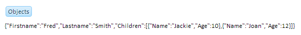

JSON Data
JSON, or Javascript Object
Notation, is simply a terse way of storing javascript objects. In many programming languages,
to create an object you must first create a variable and then create the children
of that variable independently. For example, you could define an
object named 'o' in javascript like this:
var o = new Object();
o.firstName = 'Selwyn';
o.lastName = 'Rabins';
|
Using this method, the children of the 'o' object
would need to be created one by one; each one including the name of
its parent object. This results in a lot of code that is often difficult to interpret.
In this case the object 'o' has a very simple name. However, it is
not be hard to imagine situations in which the object name is much
longer or where the programmer wants a child of the object to be an
array or an object in and of itself. JSON provides a compelling
alternative that makes this task straightforward. Rather than define
each child individually, all of the children that belong to an
object are enclosed in curly brackets. Each child in the object,
except for the last child, is then delimited using a comma.
var o = {
firstname: 'Selwyn',
lastName: 'Rabins'
}
|
The simplicity of JSON's format has made it
ubiquitous in Web application development. JSON is very frequently used for data storage, where
it is gaining in popularity over xml, and many websites return data in JSON format.
This makes it possible, for example, to pull news stories off the
web in json format, work with apps like twitter, or call external servers
and ask for things. Once you acquire this JSON it is then very easy to
manipulate. Among other things you can filter out fields, add
fields, or extract an individual element from the data. JSON is the ideal way for sending
complex data from the client to the server, or from the server to
the client. Having a good understanding of JSON is therefore very
helpful in building web applications.
In the javascript language JSON is processed
inline. This means that you can use JSON in javascript and it will
be automatically recognized by the javascript engine. You can add
objects, arrays, and literal values to your JSON data, write some
javascript code to build a given part of an object, and it will just
work. When the javascript engine comes across any JSON data it knows
that a sub-object is a sub-object, an array is an array, and a
literal value is a literal value. You do not have to parse JSON in
javascript.
Most of Alpha Anywhere's server-side code is
written in Xbasic, a language that does not support JSON natively.
However, Alpha Anywhere does support a lot of methods that work with JSON
and allow you to both import and export JSON to and from your
components. How do these methods work? When you create a JSON
object, the children of that object are read in Xbasic as a string.
The Xbasic methods then take that string, work against it, and return
either JSON or Xbasic. Alpha Anywhere's set of methods can do the
same thing for Xbasic objects, returning either JSON or Xbasic. This
gives you the ability to parse a string into an object and an object into a string.
For example, take the following Xbasic object:
dim o as p
dim o.firstName as c = "Selwyn"
dim o.lastName as c = "Rabins"
|
You could create an 'o' object like the one above in Xbasic.
It would work, but you would end up having to write a lot of unnecessary code
for each of the 'o' parent object's children. Include Alpha Anywhere's JSON
parse method, and you can easily simplify things by placing the data for 'o'
object's children into a JSON format:
dim o as p
o = json_parse("{firstName: 'Selwyn', lastName: 'Rabins'}")
|
|
The example below demonstrates how you can apply this
information in building a UX component
using Xbasic on the server-side that uses JSON. To be used as
Xbasic, JSON needs to be a string. For more information you can follow
this video
here.
|
Create JSON from Xbasic:
1. In Alpha Anywhere's toolbar click on the
Interactive Window button. This will open the Code
editor.
2. In the Code Editor, go to the Interactive tab
and define the following dot variable name 'pp' by entering this code. This is
an Xbasic object. Hit Enter at the end of every
line.
dim pp as p
pp.Name = "Fred"
pp.Age = 30
|
3. Now add ?json_generate(pp) to the end of the pp object. Hit
Enter again.
dim pp as p
pp.Name = "Fred"
pp.Age = 30
?json_generate(pp)
|
4. You should see a generated JSON representation of the pp object. You have
succesfully serialized the 'pp'
object into a JSON string.
In JSON objects start
with a curly bracket and end with a closed curly bracket. Inside the
object are name value pairs. All property names are double quoted.
In this object, for example, the property names are "Name", "Age".
JSON can also encode the logical values true and false. Add a new
'Married' property to your Xbasic code and set it to true 'pp.Married
= .t.'.
dim pp as p
pp.Name = "Fred"
pp.Age = 30
pp.Married = .t.
|
Now run this object again using ?json_generate(pp).
The generated JSON should look like this:
= {
"Name": "Fred",
"Age": 30,
"Married" :
true
}
|
In addition to creating JSON data from Xbasic you
can also instatiate an object from a JSON string. The following
example will demostrate how.
|
Create Xbasic from JSON:
1. In Alpha Anywhere's toolbar click on the Interactive
Window button. This will open the Code editor.
2. The Code Editor will open. Click the
New Script using Xbasic Editor button on the top
left of the Code Editor's toolbar.

3. This will open a new tab in the Code Editor. Enter the
following code. Hit Enter after every line.
dim txt as c
txt = <<%str%
{
"Name": "Fred",
"Age": 30,
"Married" : true
}
%str%
dim pp2 as p
pp2 = json_parse(txt)
debug(1)
|
Note: In Xbasic the angle bracket, angle bracket
<< defines a string whose definition expands over
multiple lines. Here we have defined all of our JSON data as an xbasic string
and have given that string a variable name of 'txt'. A
Xbasic object named pp2 is then created that takes as
its value the parsed txt variable.
|
4. The debug(1) has been added to the end of this code so we can see
the JSON data in the debugger. Click the lightning bolt
in the toolbar to run the code.
5. The Xbasic debugger will open. Type 'pp2'
into the Expression entry box at the bottom of the
debugger.
6. Hit Enter and then click the
expand or 'plus' button
 , to the left of the
Expression box, to show all of the JSON data in the pp2 object.
, to the left of the
Expression box, to show all of the JSON data in the pp2 object.


The previous example showed how to parse a string
containing JSON data that contained simple literal values. However,
what if you wanted
to create sub-objects within your data? As the objects in the
examples above demonstrate, all properties in JSON are delimited
with a comma; except for the last property which has nothing after
it. As long as a property is delimited and has a property name in
double quotes followed by a colon, the definition can be an object,
array, or literal. To see how to create a sub-object in JSON that
can be used with Xbasic watch this
video, or follow the guide below.
|
Creating a Sub-Object in JSON to use with Xbasic:
1. In Alpha Anywhere's toolbar click on the Interactive
Window button. This will open the Code editor.
2. The Code Editor will open. Click the
New Script using Xbasic Editor button
on the top
left of the Code Editor's toolbar.
3. Enter the same code into the Code Editor that you did in step 3 of the
'Create Xbasic from JSON' example. The code should look like this.
4. Now place a comma after the "Married" property. Hit
enter and on the line below the "Married" property add a new property
name called "Address".
5. Place a colon next to the 'Address' and a set of curly
brackets. Inside the brackets add three more properties; a "Street" property,
"Number" property, and a "City" property,
dim txt as c
txt = <<%str%
{
"Name": "Fred",
"Age": 30,
"Married" : true,
"Address" : {
"Street" : "Main Street",
"Number" : 123,
"City" : "Boston"
}
}
%str%
dim pp2 as p
pp2 = json_parse(txt)
debug(1)
|
6. Now click the lightning bolt icon
 in the Alpha
Anywhere toolbar to run this code. The debugger should open. type pp2 into the
Expression entry box at the bottom of the debugger and hit
Enter.
in the Alpha
Anywhere toolbar to run this code. The debugger should open. type pp2 into the
Expression entry box at the bottom of the debugger and hit
Enter.

7. Click the Expand or plus button
to the right of
the Expression entry.
8. Click on the Address value to
expand the Address sub-object that you defined. You should see all of the JSON
data from the sub-object you defined inside of your Xbasic code.

Arrays in JSON start with a
square bracket [ and end with a square bracket
]. JSON arrays are base 0, meaning the first
element in a JSON array is 0, the second element is 1, the third element is 2,
and so on. This is different from Xbasic which is base 1. Arrays can contain
literal values or objects themselves. This example will show how to add an array
property to your JSON data named "Children", to be used in an Xbasic object
named pp2. This array will use objects as its elements. The first element in the
array will be this object {"Name" : "John", "Age" : 3} which has the
"Name" of "John" and an "Age" of 3. Like all objects, each of the properties
within this object are delimited by a comma, with the exception on the last
property in the object. For more information on the steps that follow watch this video
|
Creating an Array in JSON to use with Xbasic:
1. In Alpha Anywhere's toolbar click on the Interactive
Window button. This will open the Code editor.
2. The Code Editor will open. Click the
New Script using Xbasic Editor button
on the top
left of the Code Editor's toolbar.
3. Enter the following code into the New Script page in the Code Editor.
dim txt as c
txt = <<%str%
{
"Name": "Fred",
"Age": 30,
"Married" : true,
"Address" : {
"Street" : "Main Street",
"Number" : 123,
"City" : Boston
},
"Children" : [
{"Name" : "John", "Age" : 3}
]
}
%str%
dim pp2 as p
pp2 = json_parse(txt)
debug(1)
|
4. Create two more elements for the "Children" array. As with objects, each
element in the array should have a trailing comma;
excepting the last element which has no comma. The result should look something
like this:
"Children" : [
{"Name" : "John", "Age" : 3},
{"Name" : "Sally", "Age" : 5},
{"Name" : "Kim", "Age" : 7}
]
|
5. Now click the lightning icon in the toolbar
and run the code. The Debugger should open. Enter
pp2 into the Expression box at the bottom on the
debugger.
6. Click the Expand or 'plus'
button next to the Expression box to see all of the properties in the pp2
object.

7. Click on the Children array property that you
defined. The elements within that property will be displayed.
8. Now click on one of the elements in your Children array in
the Value list. You should be able to see the
object properties for each element.

This example has shown how to create a complex Xbasic
object using data parsed from JSON that includes an array. You can
also pass things from Xbasic into JSON using json_generate().
Here is How.
|
Show your Xbasic object's data in JSON form:
8. Remove the debug(1) line in your code and add this to the end
instead. This code will output the JSON from the pp2 Xbasic object using the
json_generate() method. The showvar() method will display the result.
dim txt2 as c
txt2 = json_generate(pp2)
showvar(txt2)
|
9. Click the lightning icon
to
run the code. A Variable dialog will open
displaying the pp2 objects data in JSON form. The result should look something
like this:
So far, this guide has shown how to serialize
objects, but you can also use Javascript on the client-side to work
with JSON. This example will demonstrate how you can incorporate
JSON into a UX component and then manipulate the JSON data using
Javascript. For more information watch this video
Part 1 and
Part 2. To recap, we have
covered the following about JSON objects so far. A JSON object
starts and ends with curly brackets and has as many name value pairs
as you want within those
curly brackets. Each name value pair is delimited with a comma. Each
entry can be an array, a literal, or an object. In this way it is
possible to represent a very
complex object using JSON while still maintaining the ability to
easily read and understand it
|
Output a JSON on the Client-side in a UX Component:
1. In the Web Projects
control Panel click the New Component or File
button. In the New File dialog select Web Component
and click Next. Select UX
and click Next again.
2. On the Select UX Component template page
leave the Start with a blank UX Component radio button selected and click
OK.
3. On the Design tab of the UX Builder open the
UX Controls page from the menu list.

4. On the Controls page, open the Other Controls dropdown that appears
in the Design menu. Double click on the [Button]
control option to add it to your UX component.

5. Add a
[Static text:] control to your component in the same
way.
6. You can arrange the controls using the up and down arrows in the toolbar such that
they go [Button], [Static Text:].

7. Click on the [Button] control in your list to highlight it. Go over
to the Control Properties list to the Right. Find Button Properties.
8. In the Button Properties section find the Button text property and change
the button text to 'Objects'.
9. Scroll down the Properties list until you reach the Javascript
(Touch. Mouse. Pointer Events) section.
Click the button next to the click property.
10. The Edit Click Event dialog will open. Click
the Text mode radio button. In the Javascript
Attribute work area write objectsTest(); and click
Save.

11. Now Click on the [Static Text:] control that you created. In the
Properties menu under Static Text Properties find the Static text property.
12. Next to the Static text property enter the following html <div
id="msg1"></div>.

13. Still in the Controls page, find the Code dropdown in the menu and under
it click the Javascript functions option. Enter the
following code to define the objectsTest() function.
function objectsTest() {
var obj = {
"Firstname" : "Fred",
"Lastname" : "Smith",
"Children" : [
{"Name" : "Jackie", "Age" : 10},
{"Name" : "Joan", "Age" : 12}
]
};
var msg = JSON.stringify(obj);
$('msg1').innerHTML = msg;
}
|
Note: Here we have designed a button that will create an object in Javascript, serialize
that object to JSON, and then print the JSON data out. The var
obj is a javascript variable object that is initialized by
passing into it a JSON string. This is the
equivalent on the Xbasic side to using JSON parse to instantiate an xbasic
object from a JSON string. In this example we are initializing an
object using an object literal. An object literal and JSON look
similar but are not technically identical. Our object literal
contains a Firstname property, Lastname property, and
a Children property which is an array containing additional
object properties. After defining the object literal, a call javascript method,
JSON.stringify(), is used to
serialize the object into a string with the name msg1. Using
innerHTML, this msg1 string is then inserted into the text of
the div that we defined for the [Static text] control in our
component. This means that when the 'Objects' button is
clicked, using javascript, the [Static text] control will be filled
in with html that displays the JSON data.
|
14. Go to Working Preview and click
on the 'Objects' button.

Create a Button that Parses JSON data:
1. In the Web Projects
control Panel click the New Component or File
button. In the New File dialog select Web Component
and click Next. Select UX
and click Next again.
2. On the Select UX Component template page
leave the 'Start with a blank UX Component' radio button selected and click
OK.
3. On the Design tab of the UX Builder open the
UX Controls page from the menu list.
4. On the Controls page, go to the Data Controls
dropdown section in the design menu and double click on the
[TextArea] control option.
5. In the New Control dialog that opens select
'Create a single new control'. Give the control the
Name jsonIn and the
Label Json In. Under Data Type select
Character and click OK.

6. On the Controls page, open the Other Controls dropdown that appears
in the Design menu. Double click on the [Button]
control option to add it to your UX component.
7. Select the [TextArea] control that you
labeled Json In. Look to the right. In the Field
properties section inside the Control Properties list, find the
Default value property.
9. Change the Default value to be this string of JSON.
{"Firstname" : "Fred","Lastname"
: "Smith","Children" : [{"Name" : "Jackie", "Age" :
10},{"Name" : "Joan", "Age" : 12}]}
|
10. Select the [Button] control in the control list. In the Properties list on the right find the
Button Properties section.
11. In the Button Properties section, change the Button text property to read
Parse JSON.
12. Scroll down to the Javascript (Touch. Mouse. Pointer Events) properties
section and click the button next to the 'click' property.
13. The Edit Click Event Editor will appear. Click on the Text Mode radio
button. In the Javascript Attribute work area type parseJSON(); and click
Save.
14. In the design menu open the Code dropdown
and click on the Javascript functions option. Under the objectsTest()
function that you defined earlier write the following code.
function parseJSON() {
var json = {dialog.object}.getValue('jsonIn')
var obj = JSON.parse(json);
alert(obj
['Children'][1]['Name']);
}
|
Note: Just like on the Xbasic side where we use
json_parse and json_generate there exists similar features in
javascript on the client-side. In this example, the parse JSON
button is taking a string of JSON from a text area field , parsing it ,
and then doing an alert from the name field of the second item in the
children array. Square brackets are used for syntax in order to read a value
in the 'Children' array, that was defined in our JSON data . You can
also use dot notation to accomplish this, for example obj.children.
The [1] next to the Children array indicates that we are calling the
second element of that array. Javascript arrays are zero based,
meaning the first item in the
array is always 0 the second item is 1. The second element, in the
JSON data here, is an object containing a "Name" property, "Joan",
and an "Age" property, '12'. The ['Name'] that follows the [1] in
our code means that we are only interested in returning the "Name"
property. When you run this component and click the parse JSON button,
an alert should return "Joan"
|
15. Now go to Working Peview and click the Parse JSON button.
You should see an alert pop up giving you the name of the second element in the
Children array from the JSON data you defined for the Text area control.

JSON is useful for passing information form the
client to the server. One way to accomplish this is by passing
information into an Ajax callback. You might have a button that is tied to an AJAX callback which
turns around and calls up some Xbasic. You might then add some of Alpha
Anywhere's JSON functions to that Xbasic to allow you to go out and get JSON data from an external source and then
return that data as Xbasic into your component.
Xbasic is currently the coding language on the
server. Sometimes you need to turn that into something the client side browser
can recognize, that is going to be Javascript. The easiest way to get into the client is
through Javascript. When someone
clicks a button do an ajax callback, that callback is handled in Xbasic, which does
some manipulations and then returns an object to the
client browser in the form of a string. The browser, which is waiting for the response,
then takes that object and generates some actual JSON, that it returns to the client.
When you want to parse a complex set of data, you can parse JSON data back into
an ajax
callback and, on the Xbasic side, parse that data and extract values
from it. For more information watch these videos
Part 1 and
Part 2 or follow the examples below.
|
1. In the Web Projects
control Panel click the New Component or File
button. In the New File dialog select Web Component
and click Next. Select UX
and click Next again.
2. On the Select UX Component template page
leave the 'Start with a blank UX Component' radio button selected and click
OK.
3. On the Design tab of the UX Builder open the
UX Controls page from the menu list.
4. On the Controls page, go to the Data Controls
dropdown section in the design menu and double click on the
[TextArea] control option.
5. In the New Control dialog that opens select
'Create a single new control'. Give the control the
Name jsonIn and the
Label Json In. Under Data Type select
Character and click OK.
6. Select the [TextArea] control that you
labeled Json In. Look to the right. In the Field
properties section inside the Control Properties list, find the
Default value property.
7. Change the Default value to be this string of JSON.
{"Firstname" : "Fred","Lastname"
: "Smith","Children" : [{"Name" : "Jackie", "Age" :
10},{"Name" : "Joan", "Age" : 12}]}
|
8. On the Controls page, open the
Other Controls
dropdown in the menu and double click on [Button] control to add it to the UX
component.
9. With the Button control selected, look in the control
Properties list
on the right. Under the Button Properties section, find the
Button text
property.
10. Change the Button text property to read 'Make and Ajax Callback'
11. Scroll down the Properties list until you reach the Javascript (Touch. Mouse. Pointer Events) section.
Click the button next to the click property.
12. The Edit onClick Event dialog will open. Select the
Action Javascript radio
button option at the top and click the Add New Action button.
13. In the Action Javascript Select and Action dialog select
Action Callbacks and Javascript from the Categories list on the left.
14. From the Actions: list on the right select Ajax Callback. And click
OK.
15. An Action Javascript Ajax Callback dialog will open.
16. In the Ajax Callback section of the dialog, leave the
Callback type property set to
InternalXbasicFunction and type xb next to the
Function name property.
17. In the Advanced section of the dialog, find
the Additional data to submit property and next to it type additionalAjaxData().
Click OK, OK, and
Save.

Note: The Additional data to submit property
represents the data that is going to be submitted from the client
side to the server side. This property allows you to use an xbasic
function to return data. You can specify additional data to submit
in the Action Javascript Ajax Callback genie. This data will be
available inside your custom event handler, in this case the click
event. What is expected from the Additional data to submit property
is a Query string, name value pairs delimited with an & sign, type
in a Review help text in Action Javascript Ajax Callback Action.
This feature is useful when you want to arbitrary information
generated on the client side.
|
18. Click on the Code
dropdown and select Javascript functions. In the
Javascript workspace add the following code.
function
additionalAjaxData() {
var json = {dialog.object}.getValue('jsonIn');
//return '__additionalData=' + json;
var data = A5.ajax.buildURLParam('__additionalData',json);
return data;
}
|
Note: All we are going to do is read the value that is in
the text area field and send back to the server a name value pair
formatted like a query string. The important part here is that the
value part of the name value pair needs to be URL encoded. Inside
the Alpha JS library there is a buildURL function that takes first
arg as name second arg as value. It then encodes that value.
Additional Ajax data simply does a return
|
19. From the Code dropdown click on the
Xbasic functions option. Add the following Xbasic.
function xb as c (e as p)
dim json as c
json = e.__additionalData
dim p as p
p = json_parse(json)
dim msg as c
msg = "Message from Xbasic. The name of the second
child is: " + p.children[2].name
dim js as c
js = "alert('" + js_escape(msg) + "');"
xb = js
end function
|
This code takes the string of JSON data that we
defined earlier and sends it back to the server as part of an ajax
callback. It then parses this information on the server using the
parse function. Afterward, it extracts the name field, from the second array item in the childrens array,
and uses this to construct an object that is fed into an alert message
and passed to the client.
Going line by line this is what this looks like.
The xb in this case is the actual Xbasic function that will handle
the Ajax callback. In the line dim json as c, we create an
Xbasic character variable called json. This variable is then
set to = e.__additionalData. The e is a pointer
variable that is passed into the xb function. It points to an
object that contains a property called additionalData, which
is a string that is sent back as part of the Ajax callback. The p
in the line dim p as p defines an second Xbasic pointer
variable that is set to =json_parse(json). The json_parse()
function parses a string, in this case the json string that
we defined, in JSON format and returns an Xbasic variable.
Next we create a javascript
response to send back to the client. In dim msg as c we
create yet a third Xbasic variable, a character variable called
msg, that contains a string and the second element of the
children array; the array that was included in the string that we
parsed. In Xbasic arrays are 1 based, meaning the first element in
the array is [1] and the second element is [2]. This is unlike
Javascript which is 0 based. When msg is defined it is then
passed into a js object that is tied to a javascript alert. When you return a string,
you need to make sure it is Javascript safe. In dim js as c,
a js object is created that is set to be an alert message
that to be sent back to the client. Xbasic still views this alert
message as a string, but javascript will interpret it as javascript.
The line xb = js is equivalent to a return statement
in javascript. In this case we are returning the js string to
the javascript that operates the client side code.
|
20. Now go to Working Preview and click the Make Ajax Callback
button. You should see something like this:

UX Component - Server Side Event Handlers - Data
Submitted - JSON - When the UX makes any type
of Ajax callback, the data that are submitted (including
data in Repeating Sections) are now available in a
property called
e.dataSubmittedJSON
For example, assume your UX had the following controls:
Firstname, Lastname and a Repeating Section called
'CONTAINER_1' with AddressType and Address.
The e.dataSubmittedJSON value might look like this:
{
FIRSTNAME: 'Fred',
LASTNAME: 'Smith',
CONTAINER_1: [
{
ADDRESSTYPE: 'Work',
ADDRESS: '123 Main St'
},
{
ADDRESSTYPE: 'Home',
ADDRESS: '456 Center St'
}
]
}
You can use the Xbasic JSON_Parse() function to parse
this JSON string.
In this example, look at how you can make a callback from the client
to the server to retrieve data from the server in JSON format and
then work with the data that was sent back from the server and
display it on the client. In some nicely formated html on the client
side
Watch Video - Part 1
Watch Video - Part 2
Watch Video - Part 3
Watch Video - Part 4
|
Use JSON to send data from the Server to the Client:
1. In the Web Projects
control Panel click the New Component or File
button. In the New File dialog select Web Component
and click Next. Select UX
and click Next again.
2. On the Select UX Component template page
leave the 'Start with a blank UX Component' radio button selected and click
OK.
3. On the Design tab of the UX Builder open the
UX Controls page from the menu list.
4. Open the Other Controls dropdown and double click on [Button] to add a
button to the UX component.
5. Click on the [Static Text] control in the Other Controls dropdown to add a
static text control to the UX component.
6. Select the Static test control and look at the Control Properties list. In
the Static Text Properties section change the Static text property to this:
7. Select the button that you added to you component. Go to the the
Properties list on the right.
8. In the Button Properties section change the Button text property to read
Fetch data from server.
9. Go to the Javascript (Touch. Mouse. Pointer Events)
section of the Properties list and
choose the click property
10. The Edit Click Event dialog will open. Leave the Action Javascript radio
button selected.
11. Click the Add New Action button. The Action Javascript - Select an Action
dialog will open.
12. In the Categories: list select Ajax Callbacks and Javascript option. In
the Actions: list select Ajax Callback. Click OK.
13. The Action Javascript - Ajax Callback Action genie will appear. Set the Function name
property to be
xb2
14. Click the button
next to the
After callback complete Javascript property.
15. The After Callback Complete Javascript dialog will open. Add a function
called expandTemplate(); and click OK
and OK and OK
again. Save.

Note: As you probably know Ajax is asynchronos. In
creating this Ajax callback this means that you can't have the function,
expandTemplate(), be triggered immediately. As a result, in this example you
can not
add more actions to the Edit Click Event dialog
unless you click the Run actions
synchronously button at the bottom of the dialog. In this example, we are
leaving this unchecked.
|
16. Open the Code dropdown and click on the Javascript functions page. Enter the following code:
function expandTemplate() {
var ele =
$('msg2');
//A5.u.element.setContent() is like setting the .innerHTML of ele,
but preserves drag scroll behavior
A5.u.element.setContent(ele, 'this is the expanded template');
}
|
Note: Instead of setting
.innerHTML
directly we are using a helper function called
A5.u.element.setContent(). This is the preferred way
of writing this code if there is a possibility that drag
scrolling is enabled. If the
element that you are setting the .innerHTML on
had grad scrolling enabled, and you set innerHTML
directly, it would destroy the drag scrolling
capability. Moving on, after the client receives
the data we want to format
it:
|
17. Save your Component and go to the
Web Projects Control Panel.
From the Tools
dropdown select the Open Template Tester
window. On JSON tab click
Load Example.
18. From the Select Example list choose the
Simple object, simple template object. Click
OK.
19. Want JSON that is standards compliant. JSON
standard required double quotes. Highlight the
inserted JSON and hit the
Reformat JSON button.
20. Go to the Template page and change the html
to read the following:
Hello <b>{firstname}</b> <span style="color:blue;">{lastname}</span>
|
21.
Click the Show Javascript
button. This will show the Javascript
that takes data and expands the html. Copy
this javascript to the clipboard.
22. Go to the Code
dropdown again and open Javascript functions.
Paste the Javascript into the expandTemplate
function that you defined.
function expandTemplate() {
var _d = {
"firstname" : "Fred",
"lastname": "Smith"
};
var _t = [
'Hello <b>{firstname}</b>
<span style="color: blue;">{lastname}</span>'
].join('');
var settings =
{
template: _t,
partials: ''
}
var html =
A5.u.template.expand(_d,settings);
var ele =
$('msg2');
A5.u.element.setContent(ele, 'this is the expanded template');
}
|
23. To get data returned by Xbasic
callback open the Xbasic
function page from the Code dropdown
list. Enter the following code:
function xb2 as c (e as p)
delete p
dim
p.firstname as c = "Fred"
dim
p.lastname as c = "Smith"
dim
p.date as c = "" + date()
dim
json as c
json
= json_generate(p)
dim
js as c
js =
"{dialog.object}._data = " + json +";"
xb2 =
js
end function
|
In this code dim json as c
creates an Xbasic object. This object, json,
is then set to be =json_generate(p). The
json_generate() function takes a variable, in
this case a variable called p, and returns JSON
data in this object in the form of a string.
Xbasic now has a string in Xbasic that can read
and manipulate. Next we create an Xbasic object
named js, in the line dim js as c,
and set this equal to xb2. This code effectively
places the JSON data inside a temporary
variable inside the UX component.
|
24. Go to the Working
Preview tab. Click the Fetch data from
server button.
25. Now back to your Javascript functions page
and change the expandTemplate() function
to include d = {dialog.object}._data;
26. Also change A5.u.element.setContent(ele,
'this is the expanded template'); to read A5.u.element.setContent(ele,
html)
function expandTemplate() {
var _d = {
"firstname" : "Fred",
"lastname": "Smith"
};
_d = {dialog.object}._data;
var _t = [
'Hello <b>{firstname}</b>
<span style="color: blue;">{lastname}</span>'
].join('');
var settings =
{
template: _t,
partials: ''
}
var html =
A5.u.template.expand(_d,settings);
var ele =
$('msg2');
A5.u.element.setContent(ele, html);
}
|
Using A5.u.element.setContent()
is like setting the .innerHTML of ele.
Unlike .innerHTML, A5.u.element.setContent() preserves
the drag scroll behavior. The _d in this
code represents the data that the template will
expand. Setting _d to {dialog.object}._data;
makes _d draw its data from the Xbasic
function definition we defined in step 23. When
you run the component now you should see that
the same data that is defined on the
server-side, i.e in Xbasic.
|
27. Go to Working Preview and click the Fetch
data from server button again:
28. Go back to the Design
tab. To make sure that your code is calling data
from the server, reopen your Xbasic functions
page in the Code dropdown.
29. Change the "Fred" and "Smith"
in your xb2 function to something different,
like "Salmo" and "trutta" or
anything.
30. In the Code dropdown open the Javascript
functions page again.
31. Now add something to consume the date. Change this
line of code 'Hello <b>{firstname}</b> <span
style="color: blue;">{lastname}</span>' by
adding 'on {date}.'
'Hello <b>{firstname}</b> <span
style="color: blue;">{lastname}</span> on {date}.'
|
32.
Go to Working Preview and click button.
To summarize, the Ajax Callback can be made to the server.
The server Xbasic is now free to use any Xbasic code that it wants to compute
data to send back to the server. Data that gets sent back is encoded
on the server-side into an Xbasic object, in this case a p variable.
This variable then gets converted into a JSON string which gets sent back
to the client
|
The client-side template tester
window is very useful in laying out JSON data on the client side.
The user interface for the Template Tester is resizable and has
separate tabs for JSON Data,
Template, Javascript and
CSS.
As you edit in any of these windows the template preview is
automatically updated in the right part of the window.
While the Template Tester does help in presenting
JSON data from the server-side on the client, It is still necessary
to define some xbasic and javascript in order to use a specific set
of JSON data. When editing Xbasic or Javascript code, html,
and JSON it is often helpful to be able to see
the start and end of different opening and closing 'pair'
delimiters. For
example in an Xbasic function call, highlighting
the opening an closing parentheses. Or in a
Javascript function, highlighting the opening
and closing curly braces. In some HTML text, the
opening and closing tags (e.g. <div>, <body>,
<p> , etc.). Once a 'pair' has been identified,
keyboard shortcuts (Control ] and
Control-Shift ] ) allow you to quickly
move focus from the start of the 'pair' to the
end of the 'pair' or to select all of the text
inside the 'pair'. For more on this
watch this video.
To follow the advanced example below watch the
following videos
Part 1,
Part 2,
Part 3,
Part 4 or simply
download the component.
|
Create JSON from the Server side presented in
an Advanced Template:
1. In the Web Projects
control Panel click the New Component or File
button. In the New File dialog select Web Component
and click Next. Select UX
and click Next again.
2. On the Select UX Component template page
leave the 'Start with a blank UX Component' radio button selected and click
OK.
3. On the Design tab of the UX Builder open the
UX Controls page from the menu list.
4. Open the Other Controls dropdown and double click on [Button] to add a
button to the UX component.
5. Click on the [Static Text] control in the Other Controls dropdown to add a
static text control to the UX component.
6. Select the Static test control and look at the Control Properties list. In
the Static Text Properties section change the Static text property to this:
7. Select the button that you added to you component. Go to the the
Properties list on the right.
8. In the Button Properties section change the Button text property to read
Fancy Report. Save your component.
9. In the Web Projects Control
Panel click on Tools and select the
Open Template Tester
window from the dropdown.
10. Click Load Example. From the
list of choices select the 'Same as previous example, but
with CSS to style the output' option.
11.
Copy JSON data to the clipboard.

If you have completed the
JSON and sending data from Server to Client guide you will
notice that this template contains slightly more complex JSON data.
As you can tell from the square starting brackets
[ ], this JSON object is an array. Each item in the array is
filled with an object whose name starts with 'orderId:'. The
orderItems property inside this object is itself an array
that contains objects as properties. Because there is this much
nested data, computing this on the server is the appropriate thing to do.
We then want to consume the JSON data on client side and output html.
The
Javascript function that gets called by the template
Template uses some CSS, also defined in the genie, to
take a simple example and expand it.
|
12. Go back to your
component and, on the Controls page, select the
button control your created.
13. Scroll down the Properties
list to the Javascript
(Touch, Mouse, Pointer Events) section.
14. Click the button
next to the click
property.
15. The Edit Click Event dialog will open. Leave the Action Javascript radio
button selected.
16. Click the Add New Action button. The Action Javascript - Select an Action
dialog will open.
17. In the Categories: list select Ajax Callbacks and Javascript option. In
the Actions: list select Ajax Callback. Click OK.
18. The Action Javascript - Ajax Callback Action genie will appear. Set the Function name
property to be xb3
19. Click the button
next to the
After callback complete Javascript property.
20. The After Callback Complete Javascript dialog will open. Add a function
called expandTemplate2(); and click OK
and OK and OK
again. Save.

21. Go to the Code dropdown and
open the Xbasic functions page. Define a function called
xb3 using the following code:
function xb3 as c (e as p)
dim json as c
json = <<%txt%
//Insert Template JSON here
%txt%
dim js as c
js = "{dialog.object}._data2 = " + json +";"
xb3 = js
end function
|
22. Paste the JSON you copied
from the template into your xb3 function
definition between json = <<%txt% and
%txt%
Here we are using <<%txt% and
%txt%
delimeters. If you use the specify <<%json%...
%json% delimiters to enter a long string of JSON data,
the Xbasic editor will perform real-time validation on the JSON
data. For example, in the image below, the JSON has an error because
of the trailing comma after the last property (age: 23). Notice the
squiggly red line indicating the error.
If you click on the error indicator
you will see the error message.
in a realworld example you would do data querys to get the JSON
information
Take this JSON and put it into a temporary variable called _data2
|
23.
Go to the Javascript functions page. Define the function
expandTemplate2() using this code.
function expandTemplate2() {
var _d = {
"firstname" : "Fred",
"lastname": "Smith"
};
_d = {dialog.object}._data2;
var _t = [
//Insert Javascript here
].join('');
var settings =
{
template: _t,
partials: ''
}
var html =
A5.u.template.expand(_d,settings);
var ele =
$('msg3');
A5.u.element.setContent(ele,
html);
}
|
24. Go back to
Open Template Tester
window and click the
Show Javascript
hyperlink in the lower left of the dialog. Find
the template section of the javascript marked
var _t = [
25. Copy the Javascript between var
_t = [ and ].join(''); in the
Open Template Tester
window.

26. Open the
Javascript functions
page in the Code dropdown. Paste the code you
copied inside the expandTemplate2()
function.
27.
Go back to the Open Template Tester
window. Open the Javascript tab and copy
the javascript function displayed in the tab to clipboard.

28. In your component, open the
Code dropdown in the Design tab. Go to the
Javascript functions page and paste the function
you copied above the expandTemplate2()
definition.
29. Open the
Open Template Tester
window. Click on the
CSS tab and copy
all of the CSS code.
30. Open your component page. Go to
the Properties page and find the CSS properties
section.
31. Click the button
next to the Local CSS definitions,
click the code tab at the bottom of the
CSS Editor[] and
paste all of your CSS inside the editor.
32. Now go to
Working Preview.
You should see something like this:

33. Open your component and go to
the Xbasic functions page in the Code dropdown.
34.
Try adding to or altering the JSON data that is
nested inside your Xbasic function.
To summarize, an ajax callback can go to the server, get a very
complex set of data represented as a JSON object, and send that data back
to the client. Then using the templating features on the client
side you can use that data to create a very rich layout from that
JSON data. JSON can
be used on the server side to serialize xbasic objects. You can use
json_generate to serialize Xbasic objects into json data and
json_parse to parse json data back into xbasic objects. On
the client side
you can use json_stringify and json parse to serialize objects into json strings and to parse json strings into javascript objects.
json is the perfect mechanism for parsing information from the
client side to the server side or the server side to the client
side.
|
The javascript object notation that Xbasic uses to parse JSON
is not as full as the javascript object notation that exists in Javascript
itself. Javascript can process functions as properties directly from JSON.
In comparison, Xbasic requires a string of JSON to be able to parse data, which
it then feeds into a browser. Converting everthing, including all of the
javascript extras, into string format prevents the JSON from blowing things up
when it is used in Xbasic. On the other hand, not being able to use all of the
types of data that can exist inside of JSON leads to a great loss in potential
capability for an application. For example, say you had a completed date object in Javascript
that was stored in JSON. If you transformed that JSON into a string, you would end with
something that is transportable but that would not be transported. It would lose
all functionality. The way Alpha Anywhere gets around this problem is through
special Xbasic tags, flags, and nulls; markers that indicate logic that exists
inside of JSON data. It is these flags that allow Xbasic to do everything with
JSON that can be done in Javascript. Alpha Anywhere simply ooks for parts of
strings generated from JSON and, if it sees any, outputs
them as javascript. For example: Here dim o as p is an xbasic
object. The o.myFunc = "function(){...}" defines a string
dim o as p
o.myFunc = "function(){...}"
|
Below is the output from the
o.myFunc function produced by json_generate(). As you can
see from the single quotes around 'function(){...}', the
output is a string. Even if the flag in the generate function
was false .f. you would get the same thing; a string will
produce a string. If you ran this in javascript it would also view
it as a string.
?json_generate(o,.t.)
"{myFunc: 'function(){...}'}"
|
This is the same 'o' xbasic object
function. However, here the function is marked as a javascript
function.
o.myFunc = "{javascript}function(){...}"
|
This time, when we run the function
in json_generate(), no single quotes appear. Javascript will view
this as a viable function.
?json_generate(o,.t.)
"{myFunc: function(){...}}"
|
If you were to turn the boolean flag
in json_generate to false .f. then you would again end up
with a string, as shown below. This string would include the
bracketed {javascript} marker inside of it.
?json_generate(o,.f.)
"{myFunc: '{javascript}function(){...}'}"
|
|
There are several ways to use Xbasic to extract information from
JSON data.
|
For JSON data that contains objects:
1. First define a JSON object that
lives in the extension namespace inside of
Xbasic.
dim
jso as extension::JSON
|
2. Next equate the
object with the JSON data you wish to query using setJson().
You can read this data in from a file. Here we are going against
JSON data that contains an object.
jso.setJson("{\"firstname\":\"john\",\"lastname\":\"public\"}")
|
3. These different methods will return the following results:
"{\"firstname\":\"john\",\"lastname\":\"public\"}"
|
|
? jso.getLength() |
= 2
|
|
? jso.getIndexed(0) |
= "john"
|
|
? jso.getIndexed(1) |
= "public"
|
|
? jso.nameIndexed(0) |
= "firstname"
|
|
? jso.nameIndexed(1) |
= "lastname"
|
|
? jso.getProperty("firstname") |
= "john"
|
|
? jso.getProperty("lastname") |
= "public"
|
|
? jso.isArray() |
= .F.
|
|
? jso.isObject() |
= .T.
|
For JSON data that contains arrays:
1. First define an JSON object that
lives in the extension namespace inside of
Xbasic.
dim jsa as extension::JSON
|
2. Next set the
object to be the JSON data that contains the array you wish to query using setJson().
You can also read this data in from a file.
jsa.setJson("[\"one\",2,true,{\"firstname\":\"john\",\"lastname\":\"public\"}]")
|
3. These different methods will return the following results.
"[\"one\",2,true,{\"firstname\":\"john\",\"lastname\":\"public\"}]"
|
|
? jsa.getLength() |
= 4
|
|
? jsa.getIndexed(0) |
= "one"
|
|
? jsa.getIndexed(1) |
= 2
|
|
? jsa.getIndexed(2) |
= .T.
|
|
|
|
|
jselem = jsa.getIndexed(3) |
|
|
? jselem.getLength() |
= 2
|
|
? jselem.getJson() |
= {"firstname":"john","lastname":"public"}
|
|
|
|
|
jselem.setProperty("middlename","Q") |
|
|
? jselem.getJson() |
= {"firstname":"john","lastname":"public"
, "middlename" : "Q"}
|
BSON was created by the developers of Mongo
DB. BSON is JSON data that is converted to binary.
|
Interrogating BSON data from JSON:
1. First define an BSON object that
lives in the extension namespace inside of
Xbasic.
dim bso as
extension::BSON
|
2. Next set the BSON object to include the
JSON data you wish to query using setJson().
bso.setJson("[\"one\",2,true,{\"firstname\":\"john\",\"lastname\":\"public\"}]")
|
3. Call your BSON object as BSON data using getBson().
dim
bs as b = bso.getBson()
|
4. You can look at the binary:
= 0000 : 4c
00 00 00 02 30 00 04 00 00 00 6f 6e 65 00 10
0010 : 31 00 02 00 00 00 08 32 00 01 03 33 00 2e 00 00
0020 : 00 02 66 69 72 73 74 6e 61 6d 65 00 05 00 00 00
0030 : 6a 6f 68 6e 00 02 6c 61 73 74 6e 61 6d 65 00 07
0040 : 00 00 00 70 75 62 6c 69 63 00 00 00
|
5. You can Query against this data as well.
Getting JSON Back from BSON:
1. Define a JSON object that lives in the extension namespace inside of
Xbasic. Put BSON after extension. Only BSON knows how to deserialize BSON.
dim bso2 as
extension::BSON
|
2. Now set the JSON object against the BSON data you want to convert to JSON
using setBson().
3. Call your JSON object from the BSON data using getJson().
4. Result.
= [ "one",
2, true, { "firstname" : "john", "lastname" : "public" } ]
|
When you specify a custom data source the following dialog appears:
You specify the name of an Xbasic function that will return the data to be
printed by the report.
The Xbasic function can return data in one of two formats:
In both cases, the Xbasic function returns a string of data (that is either
in delimited or JSON format - explained below).
The function prototype for the Xbasic function is (assuming you specified
that the Function name was
myDataFunction in the Function
name property in image shown above):
function myDataFunction as c (e as p)
myDataFunction = <<%txt%
......the delimited, or JSON format data goes here
%txt%
end function
Notice that the function takes a single input parameter,
e.
The e object that is passed
into the function includes the value of any arguments that were passed into the
report.
For example, assume that you specified that the Custom Data Source uses an
argument called whatCountry.
Your Xbasic function can reference the value in this argument as follows:
dim country as c
country = argVal(e.arguments,"whatCountry")
Understanding the Format of the JSON Data Your Custom Function Must Return
The JSON data that your function returns can be Simple or Complex.
Simple JSON
For Simple JSON, the string that you return is just an array of JSON objects, For example:
function myjson as c(e as p)
myjson = <<%json%
[
{"Firstname" : "Fred", "Lastname" : "Smith"},
{"Firstname" : "Harry", "Lastname" : "Jones"}
]
%json%
end function
In this case since no schema is supplied the data are all considered to be character type of length 1024 characters. While the advantage of this format is
that is extremely simple, it does mean that you will need to adjust the size of each field you place on your report because its default size will likely be too large.
Complex JSON
For Complex JSON, the string that you return is an object with two properties, schema
and data. The schema object defines the schema of the data (for example, field type, size, etc.)
and the data property is an array of JSON objects that define the data for the report. For example:
function myjson as c(e as p)
myjson = <<%json%
{
"schema" : { "firstname" : { "type" : "C" , "width": 30 }
, "lastname" : { "type" : "C" , "width": 30}
, "company" : { "type" : "C" , "width": 30}
, "age" : { "type" : "N" , "width" : 3, "decimal" : 0 }
},
"data":
[
{"firstname":"Fred", "lastname":"Smith", "company" : "Alpha Software", "age" : 30},
{"firstname":"John", "lastname":"Jones", "company" : "Beta Software", "age" : 23}
]
}
%json%
end function
In the above example, we have specified the size and type of each field in the data array. Notice that we have also specified the number of decimal places
for the numeric field.
The data types supported in the schema are:
- C - Character (you must also specify a "width" property for this type)
- N - Numeric (you must also specify a "width" and "decimal" property for this type)
- L - logical
- M - memo
- D - date
- T - date/time
- Y - short time
- E - exponent numeric
- K - guid
- JPEG - Jpeg field (data in the JSON data property is expected to be base64 encoded)
- PNG - PNG (data in the JSON data property is expected to be base64 encoded)
- BMP - BMP (data in the JSON data property is expected to be base64 encoded)
- I - Image Reference Field (data in the data property is a image file name but the report will treat the data as an image).
Note: If you specify that a field uses the Date (D),
Date/Time (T) or Short time (Y) format in the schema, the data in the data array
must be a string in UTC date format. For example: 2014-10-27T23:06:50.361Z. The
date part format is yyyy-mm-dd and the time part uses GMT. In the case of a
Short time field, the date portion of the UTC date string is ignored.
The schema also allows you to extract data from objects within each row and to map property names in the data array to different names.
For example in the data shown below, the address property is an object with two sub-properties.
{
"name": "Fred Smith",
"company" : "XYZ Corp",
"address": {
"street": "Main Street",
"number": 23
}
}
Shown below is how the function would be defined to return the JSON data. Notice that the JSON object has both a schema
and a data property. The schema indicates what fields will be available to the report.
The list of fields specified by the schema are:
name, companyName, street and number.
Notice that the data
array does not have a property called companyName. It has a property called company. So the schema
property for the companyName field indicates that the source of this field is the company
property in the data array. Similarly, the street field in the schema is mapped to the
address.street property in the data array.
If the definition for a field in the schema omits the source property, then the source
is the same as the item name. For example the definition for the name field in the schema shown below does not have a source
property, therefore this field is mapped to the name property in the data array.
function myjson as c(e as p)
myjson = <<%json%
{
"schema": {
"name": {
"type": "c",
"width": 30
},
"companyName: {
"source": "company",
"type" : "c",
"width" : 30
},
"street": {
"source": "address.street",
"type": "c",
"width": 40
},
"number": {
"source": "address.number",
"type": "n",
"width": 5,
"decimal": 0
}
},
"data": [
{
"name": "Fred Smith",
"company" : "XYZ Corp",
"address": {
"street": "Main Street",
"number": 23
}
},
{
"name": "John Jones",
"company" : "ABC Corp",
"address": {
"street": "Corner Road",
"number": 3
}
}
]
}
%json%
end function
In the next example, we show how the JSON object that you specify can include image data. The binary data for the image are encoded as base64 strings.
The example shows the complete function definition. Notice that the schema indicates that the image field will be stored as a
PNG. Notice also that in the first record, the base64 encoded data in the image property does not include the
MIME type at the start of the base64 encoded data. This data is therefore presumed to be a
PNG image since the schema indicates that the image is
a PNG type. Notice however, that the second row of data in the data array has a MIME type prefix on the base64 encoded image data. The data
for the image is for a BMP image. The image will therefore be converted from
BMP to PNG automatically.
function myjson as c(e as p)
myjson = <<%json%
{
"schema" : {
"name" : { "type" : "C" , "width": 30 },
"image" : { "type" : "Png" }
},
"data":
[
{"name":"John Smith", "image" : "iVBORw...(data truncated for readability)....AAAElFTkSuQmCC" },
{"name":"Jane Smith", "image" : "data:image/bmp;base64,Qk02AwAAA...(data truncated for readability)....AAAADYAAAAAA=="}
]
}
%json%
end function
|
UX Component - List Control |
Displaying Data From Twitter |
The Twitter API returns data in JSON format. The
List control on a UX component is easily
populated with JSON data. The Twitter API,
however, is a little tricky to work with because
it requires an OAuth authorization before you
can call the API functions. Xbasic contains two
built-in functions that simplify this.
In this example we show how you can easily build
a List control that displays Tweets that are
retrieved by making a REST API call to Twitter.
In the example we use built-in Xbasic functions
to get a 'bearer token' from Twitter. Once we
have this token, we can make calls to the
Twitter API to get data in a JSON format that is
used to populate the List control.
IMPORTANT: The video shows selecting the
Twitter List from the 'Defined Controls' section
of the UX builder toolbox. This has been
changed. You should now select the 'Twitter_Display_Tweets_in_a_List_Control'
sample UX Component template in the dialog that
appears when you create a new UX component.
Watch Video - Part 1
Watch Video - Part 2
Watch Video - Part 3
Watch Video - Part 4 |
AlphaDAO - ResultSet - Generating JSON Data - .ToJSONObjectSyntax()
Method - When you use the .ToJSONObjectSyntax()
method to generate JSON data from a resultset, and you
set the optional ConvertToText flag to .f. (it defaults
to .t.), then date and date time values in the resultset
now create Javascript date objects. For example:
dim cn as sql::Connection
cn.open("::Name::_northwind")
cn.PortableSQLEnabled = .t.
cn.Execute("select first 5 orderid, orderdate from
orders")
rs = cn.ResultSet
?rs.ToJSONObjectSyntax(-1,-1,.f.,.f.)
= {"orderid" : 10255, "orderdate" : new Date(1952, 11,
18, 0, 0, 0, 0)}
{"orderid" : 10249, "orderdate" : new Date(1996, 6, 5,
0, 0, 0, 0)}
{"orderid" : 10250, "orderdate" : new Date(1996, 6, 8,
0, 0, 0, 0)}
{"orderid" : 10251, "orderdate" : new Date(1996, 6, 8,
0, 0, 0, 0)}
{"orderid" : 10252, "orderdate" : new Date(1996, 6, 9,
0, 0, 0, 0)}
all of
these json functions are used to create the code. builders we have written that
build the code. JSON parse and generate most important
Internal Use Only. Compacts a JSON string
|
a5_compact_json(c jsondata [,l flagcompact [,l flagusequotes ]])
a5_compact_json() uses codes for the property names.
Example:
json = "{name: 'selwyn', city: 'lexington'}"
?a5_compact_json(json)
= data = {"a": "selwyn","b": "lexington"}
map = {"a": "name","b": "city"}
as you can see this function returns two strings, a) the coded json, and the
'map' that shows how the new property names map to the old property names
Internal Use Only.
Expands a JSON string to go back from the compacted json to the real
json you call the a5_expand_json() function
|
Syntax: a5_expand_json(c jsondata ,c map )
p= a5_compact_json(json)
?a5_expand_json(p.data,p.map)
= {"name":"selwyn","city":"lexington"}
a5_json_extractvalues()
Extracts name/value pairs from a JSON string.
|
Syntax: C Result =
a5_JSON_extractValues(C txt )
C Result : String containing name:value pairs
C
txt : JSON
expression to parse
Examples:
This example demonstrates parsing a relatively simple JSON
string with two small twists: it contains a quoted string, and there is
a comma inside the quoted string.
?a5_JSON_extractValues("{name:Fred, city: Boston, address: \"123 Main St, Suite 23\", state: MA}")
= name:Fred
city: Boston
address: "123 Main St, Suite 23"
state: MA
|
This real-life example parses a JSON string
returned by the Twitter API.
c = <<%txt%
#{"completed_in":0.014,"max_id":157517767036248066,"max_id_str":"157517767036248066",
"next_page":"?page=2&max_id=157517767036248066&q=Red%20Sox&rpp=2","page":1,"query":"Red+Sox",
"refresh_url":"?since_id=157517767036248066&q=Red%20Sox",
"results":[{"created_at":"Thu, 12 Jan 2012 17:42:16 +0000",
"from_user":"Liliancje","from_user_id":453416927,"from_user_id_str":"453416927",
"from_user_name":"Lilian Clum","geo":null,"id":157517767036248066,
"id_str":"157517767036248066","iso_language_code":"en","metadata":{"result_type":"recent"},
"profile_image_url":"http://a0.twimg.com/profile_images/1730506616/rnhizx453h_135249004-2_normal.jpg",
"profile_image_url_https":"https://si0.twimg.com/profile_images/1730506616/rnhizx453h_135249004-2_normal.jpg",
"source":"<a href="http://twitterfeed.com" rel="nofollow">twitterfeed</a>",
"text":"JASON VARITEK Boston Red Sox Majestic AUTHENTIC Home
Baseball Jersey, 44/LARGE: Same Style Authentic On-Field
Je... http://t.co/MR8spX5g",
"to_user":null,"to_user_id":null,"to_user_id_str":null,"to_user_name":null},
{"created_at":"Thu, 12 Jan 2012 17:41:56 +0000",
"from_user":"BR_BOSRedSox","from_user_id":15908353,"from_user_id_str":"15908353",
"from_user_name":"Boston Red Sox","geo":null,"id":157517679777951744,
"id_str":"157517679777951744","iso_language_code":"en","metadata":{"result_type":"recent"},
"profile_image_url":"http://a3.twimg.com/profile_images/1157609127/BR_LOGO_normal.jpg",
"profile_image_url_https":"https://si0.twimg.com/profile_images/1157609127/BR_LOGO_normal.jpg",
"source":"<a href="http://twitterfeed.com" rel="nofollow">twitterfeed</a>",
"text":"http://t.co/B4SxnH3d - Boston Red Sox Headlines -
Red Sox Mailbag: Boston In No Rush to Sign Jacoby Ellsbury
to L... http://t.co/1oWDduRM",
"to_user":null,"to_user_id":null,"to_user_id_str":null,"to_user_name":null}],
"results_per_page":2,"since_id":0,"since_id_str":"0"}%txt%
? a5_json_extractvalues(c)
= completed_in:0.014
max_id:157517767036248066
max_id_str:157517767036248066
next_page:?page=2&max_id=157517767036248066&q=Red%20Sox&rpp=2
page:1
query:Red+Sox
refresh_url:?since_id=157517767036248066&q=Red%20Sox
results:created_at:Thu, 12 Jan 2012 17:42:16 +0000
from_user:Liliancje
from_user_id:453416927
from_user_id_str:453416927
from_user_name:Lilian Clum
geo:null
id:157517767036248066
id_str:157517767036248066
iso_language_code:en
metadata:result_type:recent
profile_image_url:http://a0.twimg.com/profile_images/1730506616/rnhizx453h_135249004-2_normal.jpg
profile_image_url_https:https://si0.twimg.com/profile_images/1730506616/rnhizx453h_135249004-2_normal.jpg
source:<a href="http://twitterfeed.com" rel="nofollow">twitterfeed</a>
text:JASON VARITEK Boston Red Sox Majestic AUTHENTIC Home
Baseball Jersey, 44/LARGE: Same Style Authentic On-Field
Je... http://t.co/MR8spX5g
to_user:null
to_user_id:null
to_user_id_str:null
to_user_name:null
created_at:Thu, 12 Jan 2012 17:41:56 +0000
from_user:BR_BOSRedSox
from_user_id:15908353
from_user_id_str:15908353
from_user_name:Boston Red Sox
geo:null
id:157517679777951744
id_str:157517679777951744
iso_language_code:en
metadata:result_type:recent
profile_image_url:http://a3.twimg.com/profile_images/1157609127/BR_LOGO_normal.jpg
profile_image_url_https:https://si0.twimg.com/profile_images/1157609127/BR_LOGO_normal.jpg
source:<a href="http://twitterfeed.com" rel="nofollow">twitterfeed</a>
text:http://t.co/B4SxnH3d - Boston Red Sox Headlines - Red
Sox Mailbag: Boston In No Rush to Sign Jacoby Ellsbury to
L... http://t.co/1oWDduRM
to_user:null
to_user_id:null
to_user_id_str:null
to_user_name:null
results_per_page:2
since_id:0
since_id_str:0
|
a5_json_populatearray()
Takes an array of JSON objects and populates an
Xbasic property array.
|
Syntax: a5_JSON_PopulateArray(P arr ,C
txt )
P arr
Array to populate with data
C txt
String of JSON data
Example:
txt = <<%txt%
[
{firstname: 'Fred', lastname: 'Smith', married: true, kids: 2} ,
{firstname: 'richard', lastname: 'smith'}
]
%txt%
dim arr[0] as p
a5_JSON_PopulateArray(arr,txt)
?arr.size()
= 2
?arr[1]
= firstname = "Fred"
kids = 2
lastname = "Smith"
married = .T.
|
a5_json_prep()
Used before calling VarToJSON() to remove property
values that are nulls.
VarToJSON Function
|
Syntax:
a5_JSON_Prep(P p )
P p
Property array to preprocess
a5_json_viewer()
a5_json_viewer() Function - The A5_json_viewer() function can be
used to open a viewer for JSON data.
|

a5_makejsontree()
Takes an array and makes a JSON tree. Array has these
properties at a minimum: .label, .level,
|
Syntax:
a5_makejsontree(p treein [,* opsin ])
a5_makeJSONTree as c (treeIn as p, opsIn = null_value())
a5_merge_json_into_template()
While templates are documented in a section
called 'Client-side Templates' this is somewhat misleading because
you can also use templates in server-side code using the
a5_merge_JSON_into_template() Xbasic function.
Using Client-side Templates on the Server-side -
a5_merge_JSON_into_template() Function - Because Alpha Anywhere has
the ability to execute Javascript from an Xbasic script, you can
actually use client-side templates in Xbasic using the
a5_merge_JSON_into_template() function.
a5_merge_JSON_into_template() Function - Application Server - The
a5_merge_JSON_into_template() function did not work when called from
Xbasic code running in the Application Server. It only worked in the
Development Server.
|
Syntax:
a5_merge_json_into_template(c jsondata ,c template [,c javascriptfunctions [,c partialtemplatesjson [,c localcss [,l flagusev8 ]]]])
c Result = a5_merge_JSON_into_template(C jsonData
,C template [,C javascriptFunctions [,C partialTemplatesJSON
[,C localCSS ]]])
Example:
dim data as c
data = <<%txt%
{firstname: 'Fred', lastname: 'Jones'}
%txt%
template = <<%html%
Name: {firstname} {lastname}
%html%
htmlOut = a5_merge_JSON_into_template(data,template)
showvar(htmlOut)
|
a5_sql_nested_query_to_json_document()
a5_sql_nested_query_to_json_document() Function -
Queries one or more SQL databases and returns a JSON document with
the query result.
This function is inspired by NoSQL databases that return a JSON
document with a query result. The JSON document return by such a
query often contains nested JSON documents. For example for each
customer, show orders for that customer, and for each order, show
order details for that order.
|
Syntax:
a5_sql_nested_query_to_json_document(p ops ,p args [,c mode ])
P result = a5_sql_nested_query_to_json_document(
P options, SQL::Arguments Args)
Examples:
For example, here is a sample JSON document returned by
this function showing customers, nested orders, and
nested order details:
{
"customer": [
{
"customerId": "HUNGO",
"companyName": "Hungry Owl All-Night Grocers",
"orders": [
{
"orderid": "10298",
"customerid": "HUNGO",
"value": "10298",
"orderDetails": [
{
"OrderID": "10298",
"ProductID": "2",
"UnitPrice": "15.2",
"Quantity": "40",
"Discount": "0"
}
]
},
{
"orderid": "10309",
"customerid": "HUNGO",
"value": "10309",
"orderDetails": [
{
"OrderID": "10309",
"ProductID": "4",
"UnitPrice": "17.6",
"Quantity": "20",
"Discount": "0"
},
truncated for brevity....
|
The result object that is returned has these
properties
-
hasError - .t. or .f. depending on whether the function
returns an error.
-
errorText - the error text if hasError is .t.
-
data - the JSON data returned by the function
The options object that is passed into the function has
these properties:
-
options.connectionString - The connection string for the
query. This is an optional property. You can also specify a query
string to use for each nested query. If you do not specify options.connectionString, then you MUST specify a connection
string for each query. Typically, you will querying against a single
database, and so it is most efficient to specify the options.connectionString parameter and NOT specify a connection
string for each SQL statement.
-
options.SQL - a CRLF delimited list of SQL statements to
execute. The indentation in the parameter indicates the hierarchy of
the query. See below for more details.
-
options.flagUseSubSelects - Indicates if child SQL
queries use a SQL Sub-select in the WHERE clause. If you are querying
against a single database then this is the most efficient option. If
each query specifies its own connection string, then this flag must
be set to .f..
Example options.SQL parameter:
options.sql =
<<%txt%
{sql: 'select * from customers where country = :whatCountry ', name:
'customer' }
{sql:'select * from orders', name: 'orders', parentKey: 'cId',
key: 'cId'}
%txt%
Notice that the options.sql property is a CRLF
delimited string of JSON strings in this format:
options.SQL = <<%txt%
{JSON string 1}
{JSON string2}
%txt%
The fact that {JSON string 2} is indented (using a
single Tab character NOT spaces) is significant. The
indentation indicates that this query is an immediate child of the
query in the line above it.
You can have multiple levels of indentation. and
multiple queries with the same parent, for
example:
options.SQL = <<%txt%
{JSON string 1}
{JSON string2}
{JSON string
3}
{JSON string 4}
%txt%
In the above example, the SQL query defined by {JSON
string 3} is a child of {JSON string2}. The query
defined by {JSON string 1} has two child queries. A real
world example of an hierarchy that would be defined
using the above structure might be:
Customers
` Orders
OrderDetails
Payments
The individual JSON strings each have these properties
-
sql - The actual SQL statement to execute
-
name - An arbitrary name. Must be unique. This name is
used for the child records in the JSON document that is returned.
-
parentKey - Only required for child queries.
Defines the field in the child SQL statement that joins the child
query with the parent query.
-
key - Only required for child queries. Defines the field
in the child's parent SQL query that joins the child query with the
parent query.
Example 1 - Simple two level query
dim ops as p
ops.connectionString = "::Name::northwind"
ops.sql = <<%txt%
{sql: 'select * from customers where country = :whatCountry
', name: 'customer' }
{sql: 'select * from orders', name: 'orders', parentKey: 'customerid',
key: 'customerId'}
%txt%
dim args as sql::Arguments
args.add("whatCountry","France")
p = a5_sql_nested_query_to_json_document(ops,args)
?p.data
=
{
"customer": [
{
"CustomerID": "BLONP",
"CompanyName": "Blondesddsl pre et fils",
"ContactName": "Frdrique Citeaux",
"ContactTitle": "Marketing Manager",
"Address": "24, place Klber",
"City": "Strasbourg",
"Region": null,
"PostalCode": "67000",
"Country": "France",
"Phone": "88.60.15.31",
"Fax": "88.60.15.32",
"image": null,
"imageThumb": null,
"orders": [
{
"OrderID": "10265",
"CustomerID": "BLONP",
"EmployeeID": "2",
"OrderDate": "07/25/1996 12:00:00 00 am",
"RequiredDate": "08/22/1996 12:00:00 00 am",
"ShippedDate": "08/12/1996 12:00:00 00 am",
"ShipVia": "1",
"Freight": "55.28",
"ShipName": "Blondel pre et fils",
"ShipAddress": "24, place Klber",
"ShipCity": "Strasbourg",
"ShipRegion": null,
"ShipPostalCode": "67000",
"ShipCountry": "France"
},
{
"OrderID": "10297",
"CustomerID": "BLONP",
"EmployeeID": "5",
"OrderDate": "09/04/1996 12:00:00 00 am",
"RequiredDate": "10/16/1996 12:00:00 00 am",
"ShippedDate": "09/10/1996 12:00:00 00 am",
"ShipVia": "2",
"Freight": "5.74",
"ShipName": "Blondel pre et fils",
"ShipAddress": "24, place Klber",
truncated for brevity......
Example 2 - Simple three level query
dim ops as p
ops.connectionString = "::Name::northwind"
ops.sql = <<%txt%
{sql: 'select * from customers where country = :whatCountry
', name: 'customer' }
{sql: 'select * from orders', name: 'orders', parentKey:
'customerid', key: 'customerId'}
{sql: 'select * from [order details]', name: 'orderDetails',
parentKey: 'orderId', key: 'orderId'}
%txt%
dim args as sql::Arguments
args.add("whatCountry","France")
p = a5_sql_nested_query_to_json_document(ops,args)
Example 3 - Three level query where each query is in a
different database (the connection string is specified
for each query).
'since each query specifies its own connection string,
the flagUseSubSelects flag must
'be set to .f.
ops.flagUseSubSelects = .f.
ops.sql = <<%txt%
{sql: 'select * from customers where country = :whatCountry
', name: 'customer' , connectionString:
'::Name::northwind'}
{sql: 'select * from orders', name: 'orders', parentKey:
'customerid', key: 'customerId', connectionString:
'::Name::northwind2'}
{sql: 'select * from [order details]', name: 'orderDetails',
parentKey: 'orderId', key: 'orderId' , connectionString:
'::Name::northwind2'}
%txt%
dim args as sql::Arguments
args.add("whatCountry","France")
p = a5_sql_nested_query_to_json_document(ops,args)
Limiting the Number of Child Records
If you want to limit the number of records retrieved at
any level in the hierarchy, you can.
To limit the number of records at the top level of the
hierarchy, you would simply use the FIRST clause in your
SQL select statement. However, for child queries, using
the FIRST clause in the SQL will not work (because you
want the FIRST n records within EACH parent
group, not the FIRST n records in ALL parent
groups).
To limit the number of records in a child query, you use
the 'limit' property in the JSON object that defines the
query.
For example in the code shown below we are fetching the
first 5 orders for each customer:
dim ops as p
ops.connectionString = "::Name::northwind"
ops.sql = <<%txt%
{sql: 'select * from customers', name: 'customer' }
{sql: 'select * from orders', name: 'orders', parentKey: 'customerid',
key: 'customerId', limit: 5}
%txt%
NOTE: If you do use a FIRST clause in a child SQL statement,
the SQL statement is automatically parsed and the FIRST clause is
removed and converted into a 'limit' property in the JSON definition.
So, the following two objects are actually equivalent:
dim ops as p
ops.connectionString = "::Name::northwind"
ops.sql = <<%txt%
{sql: 'select * from customers', name: 'customer' }
{sql: 'select * from orders', name: 'orders', parentKey: 'customerid',
key: 'customerId', limit: 5}
%txt%
dim ops as p
ops.connectionString = "::Name::northwind"
ops.sql = <<%txt%
{sql: 'select * from customers', name: 'customer' }
{sql: 'select
FIRST 5 * from
orders', name: 'orders', parentKey: 'customerid', key: 'customerId'}
%txt%
Eliminating Key Values
By default, the JSON that is created shows the parent
key value in the child data. For example in the example
JSON shown below (which shows a customer, and all of
their orders), the 'CustomerID' property is shown n each
item in the 'orders' array. This is really not
necessary.
=
{
"customer": [
{
"CustomerID": "BLONP",
"CompanyName": "Blondesddsl pre et fils",
"ContactName": "Frdrique Citeaux",
"orders": [
{
"OrderID": "10265",
"CustomerID": "BLONP",
"EmployeeID": "2",
"OrderDate": "07/25/1996 12:00:00 00 am",
"ShipVia": "1",
"Freight": "55.28",
In order to suppress parent key values in child records,
you can set the 'sparse' property to .t. in the object
you pass into the a5_sql_nested_query_to_json_document()
function. For example:
dim ops as p
ops.sparse = .t.
ops.connectionString = "::Name::northwind"
ops.sql = <<%txt%
{sql: 'select * from customers', name: 'customer' }
{sql: 'select * from orders', name: 'orders', parentKey: 'customerid',
key: 'customerId', limit: 5}
%txt%
Preserving Data Types in the JSON
You can use the convertToText property in the
options that you pass in to control whether the
generated JSON converts all data to strings, or
preserves data types.
For exmaple:
ops.convertToText = .f.
p = a5_sql_nested_query_to_json_document(ops,args)
would result in JSON that looked like this:
"customer": [
{
"customerId": "GREAL",
"companyName": "Great Lakes Food Market",
"orders": [
{
"orderid": 10528,
"orderdate": new Date(1997,05,06,00,00,0),
"value": 10528,
........
Notice that the 'orderDate, orderId, and value
properties are typed.
a5_url_from_storagejsonformat()
Takes a JSON definition for an object in storage
(e.g. Amazon S3) and generates a signed URL to download the object.
E.g. take this: "{cs: 'alphamediacapture',object:
'my_movies7.xlsx',source: 'S3'}" and generates a signed URL to
download the object. 'numberOfSecondsBeforeURLExpires' - if the
object is protected, specify the number of seconds that the URL can
be used for after it has been generated. Default is 240 seconds.
a5_url_fromStorageJSONformat() Function - Generates a
signed URL to download a file from Amazon S3 storage.
The a5_url_from_storageJSONformat() function can be used to
display/download a file from storage (e.g. Amazon S3) directly, with
very little load on the Alpha server. The purpose of the function is
to take a JSON string that defines the address of an object in
storage (e.g. Amazon S3) and to generate a signed URL that can be
used to download the object directly to the client from storage
without having to first download the object to the Alpha server and
then have the Alpha server send the file to the client.
NOTE: Currently the only vendor supported is
Amazon S3 so vendor must be set to 'S3'
NOTE: The storage connection string is defined by selecting the
Tools, Storage Connection Strings menu when the Web Projects Control
Panel has focus. When you define storage connection strings you have
the option of encrypting the storage connection string. You must NOT
encrypt the storage connection string or else Alpha Anywhere will
not be able to parse the storage connection string to determine your
storage credentials.
Where:
key - your access key - as defined in the storage connection string
expires - indicates how long the URL can be used for (only applies
if the object was uploaded to storage as 'Protected Read')
signature - a special signature based on the credentials specified
in the storage connection string.
By default, the expires property is 240 seconds. That means that if
the URL is used more than 240 seconds after it was generated, Amazon
S3 will return a 'permission denied' error. The
a5_url_from_storageJSONformat() function takes an optional second
argument where you can specify how long the URL is good for in
seconds. The default value for this parameter is 240.
File Upload - Amazon S3 - A new action has been added to Action
Javascript for the UX component to upload files to a bucket in
Amazon S3 storage.
NOTE: This action is not available for the Grid Component. However,
the standard 'File Upload' and 'Image Upload' actions in Action
Javascript, which are supported in the Grid now supports an option
to target the upload to Amazon S3.
Watch Video
- Part 1
Watch Video
- Part 2
The benefit of this method is that the upload
occurs directly to the Amazon servers without putting any load on
the the Alpha Application Server.
NOTE: There is a small load on the Alpha Server for each file that
is uploaded because a callback has to be made to the Alpha server to
sign the URL used for the upload. This is necessary because the
secret key for your Amazon account is stored on the Alpha server.
Features of the Amazon S3 File Upload include:
ability to upload a single file or multiple files
ability to define rules for maximum size of an individual file, or
all files (if multiple file upload is supported)
ability to show progress during while file(s) are being uploaded
ability to cancel an file upload
full event model that allows you to completely customize the action.
ability to specify the name (including sub-folder name) for each
object that is stored on S3. A Javascript function can be called to
dynamically compute the fully qualified name of the object on S3.
ability to set read permission on the uploaded files (public read or
authenticated read)
|
Syntax: a5_url_from_storagejsonformat(c json [,n numberofsecondsbeforeurlexpires ])
a5_url_from_storageJSONformat as c (json as c ,
numberOfSecondsBeforeURLExpires = 240)
Examples:
The JSON string format that defines the address of an object in storage is:
{cs: 'storage connection
string', object: 'name of object', source: 'vendor'}
|
For example, assume you have a named storage connection string called
'myS3bucket'. A JSON string that defines the address of an object called 'ProductPrices.pdf'
would be:
{cs: 'myS3bucket', object: 'ProductPrices.pdf',
source: 'S3'}
|
To generate a URL to display or download this object you would do the
following:
dim address as c
address = <<%txt%
{
cs: 'myS3bucket',
object: 'ProductPrices.pdf',
source: 'S3'
}
%txt%
dim url as c
url = a5_url_from_storateJSONformat(address)
|
The resulting URL would look something like this (assuming that the bucket
name specified in the connection string was 'myBucket'):
https://s3.amazonaws.com/myBucket/ProductPrices.pdf?AWSAccessKeyId=key&Expires=expiration&Signature=signature
|
a5_xbasictreetojsontree()
Take a CRLF delimited string that Xdialog uses for
Tree Control data and converts to a JSON string.
|
Syntax:
a5_xbasictreetojsontree(c treedata [,c separator ])a5_XbasicTreeToJSONTree as c (treedata as c, separator as c = "." )
a5w_ajaxtojson()
Dumps out JSON from a data source.
|
Syntax:
a5w_ajaxtojson(p tmpl ,p do )
A5w_AJAXToJSON AS P ( tmpl AS P, do AS P )
argumentsfromjson()
Appends arguments to an argument object from a JSON
argument definition
|
Syntax:
argumentsfromjson(p args ,c json )
argumentsFromJSON as v (args as sql::arguments, json as c )
argumentstojson()
Serializes arguments to a JSON string
|
Syntax:
argumentstojson(* argsorargsxml [,l flagcompact ])
function argumentsToJSON as c (argsOrArgsXML as A, flagCompact = .f. )
crlf_to_json()
Converts cr-lf delimited text to JSON. First row of
text is assumed to be the field names. Default delimiter (character
between fields) is |. crlf - takes something like colors and turn it into a json
array,
|
Syntax: crlf_to_json(c txt [,c delimiter ])
crlf_to_json as c (txt as c, delimiter = "|")
json_composite()
Turns flat lists into tree structure.
|
Syntax:
json_composite(c parent,c relations, c jsontext [, c mode[, c limits[,c views[,c
calcs]]]] )
Examples:
Turning flat lists into tree structure
dim relations as c = <<%str%
{
"orders" : {
"customerId" : "id",
"orderDetails" : {
"orderId2" : "orderId"
}
}
}
%str%
dim def as c
def = <<%txt%
{
"customers": [
{"id": "alfki", "name": "305 - 14th Ave. S.\nSuite 3B"},
{"id": "bolid", "name": "name 2"}
],
"orders": [
{"orderId": 1, "customerId": "alfki", "orderData":
"12/1/2013"},
{"orderId": 2, "customerId": "bolid", "orderData":
"12/2/2013"},
{"orderId": 3, "customerId": "alfki", "orderData":
"12/3/2013"},
{"orderId": 4, "customerId": "alfki", "orderData":
"12/1/2013"}
],
"orderDetails": [
{"lineitemId": 1, "orderId2": 1, "prodId": 1, "qty": 3},
{"lineitemId": 2, "orderId2": 2, "prodId": 6, "qty": 6},
{"lineitemId": 3, "orderId2": 2, "prodId": 9, "qty": 7},
{"lineitemId": 4, "orderId2": 1, "prodId": 3, "qty": 2},
{"lineitemId": 5, "orderId2": 1, "prodId": 3, "qty": 8},
{"lineitemId": 6, "orderId2": 3, "prodId": 4, "qty": 9},
{"lineitemId": 7, "orderId2": 3, "prodId": 3, "qty": 1},
{"lineitemId": 8, "orderId2": 6, "prodId": 2, "qty": 3}
]
}
%txt%
t1 = now()
output = json_composite("customers",relations,def,"")
t2 = now()
'showvar(output)
showvar( json_reformat("{"+output+"}",.t.) , "took "+(t2-t1)
)
|
json_enumerate()
Gets all of the top level property names.
|
Syntax:
json_enumerate(c jsontext)
Examples
? json_enumerate("{ \"firstname\"
: \"joe\" , \"lastname\" : \"plumber\" }")
= firstname
lastname
|
json_extract()
json_extract() Function - Extracts a property from a
JSON object. Note: The JSON text passed to the function must be
properly formed (i.e. use double quotes on property and string
names). You can use json_reformat_safe() to 'clean' up the JSON
string before calling json_extract.
|
Syntax:
json_extract(c jsontext,c tag)
c text = json_extract( C json_text, c property_name)
Examples:
dim json as c
json = <<%txt%
{
name: 'Fred',
address: {
street: '123
Main St',
city:
'Boston',
state: 'MA'
}
}
'json_extract() requires properly formed JSON, so
'we first call json_reformat_safe()
dim json2 as c
json2 = json_reformat_safe(json)
?json_extract(json2,"name")
= "Fred"
?json_extract(json2,"address")
= "
{
street: '123
Main St',
city:
'Boston',
state: 'MA'
}
"
%txt%
|
json_filter()
json_filter() Function - Extracts or omits certain
properties from a JSON string. NOTE: Conceptually, this function is
similar to the filter_string() function, except that it operates on
JSON strings. Where:
-
json - input string of JSON data
-
propertyNames - comma delimited list of the property
names in the JSON string that you want to filter
-
exclude = .t. or .f. - default .f. - if exclude = .t.
the specified propertyNames are excluded from the JSON
string
|
Syntax:
json_filter(c jsontext,c tags[,l exclude])
c result = json_filter(c json [, c properyNames [, L exclude]] )
Examples:
|
'extract object with a single field
dim json as c
json = <<%txt%
{
one" : 1 ,
two" : "TWO" ,
three : [ 1 ,2 ,3 ]
}
%txt%
? json_filter(json,"one")
= { "one" : 1}
? json_filter(json,"two")
= { "two" : "TWO"}
? json_filter(json,"three")
= { "three" : [ 1 ,2 ,3 ]}
'exclude a single field
? json_filter(json,"one",.t.)
= { "two" : "TWO" , "three" : [ 1 ,2 ,3 ]}
? json_filter(json,"two",.t.)
= { "one" : 1 , "three" : [ 1 ,2 ,3 ]}
? json_filter(json,"three",.t.)
= { "one" : 1 , "two" : "TWO"}
'include multiple (comma separated) fields
? json_filter(json,"one,two")
= { "one" : 1 , "two" : "TWO"}
? json_filter(json,"one,three")
= { "one" : 1 , "three" : [ 1 ,2 ,3 ]}
|
json_flatten()
json_flatten() Function - Takes a JSON string that
defines an array of hierarchical objects and 'flattens' the array.
This function is useful for Reporting where the report data source
is set to a Custom data source that returns JSON data. If the JSON
data that is returned is hierarchical, then you will need to
'flatten' it in order to get it into an appropriate format for the
report writer.
|
Syntax:
json_flatten(c jsontext,c patterns)
c output = json_flatten(C jsonIn, c
template)
Examples:
The format of the template is shown in the following
example.
Consider the following JSON String:
[
{
"id": "alfki",
"name": "customer 1",
"__a5crc": -253329,
"orders": [
{
"orderId": 1,
"orderData": "12/1/2013",
"ordcust": "1|||alfki",
"orderDetails": [
{
"lineitemId": 1,
"prodId": 1,
"qty": 3,
"ordprod": "1|||1"
},
{
"lineitemId": 4,
"prodId": 3,
"qty": 2,
"ordprod": "1|||3"
}
]
},
{
"orderId": 3,
"orderData": "12/3/2013",
"ordcust": "3|||alfki",
"orderDetails": [
{
"lineitemId": 6,
"prodId": 4,
"qty": 9,
"ordprod": "3|||4"
},
{
"lineitemId": 7,
"prodId": 3,
"qty": 1,
"ordprod": "3|||3"
}
]
}
]
},
{
"id": "bolid",
"name": "customer 2",
"__a5crc": -194126,
"orders": [
{
"orderId": 2,
"orderData": "12/2/2013",
"ordcust": "2|||bolid",
"orderDetails": [
{
"lineitemId": 2,
"prodId": 6,
"qty": 6,
"ordprod": "2|||6"
},
{
"lineitemId": 3,
"prodId": 9,
"qty": 7,
"ordprod": "2|||9"
}
]
}
]
}
]
|
The JSON object defined by the above string shows an
array of customers with embedded orders. For each order, there are
embedded line-items.
The structure of the JSON object is
Customers
Orders
Order Details
The json_flatten() function takes two arguments - the JSON string you
want to flatten, and a template that defines which properties in the
input JSON you want to map to the output JSON.
Assume that the following template is specified:
{
"id" : "id" ,
"name" : "name" ,
"orders" : [
{
"orderId" : "orderId" ,
"orderData" : "orderData" ,
"orderDetails" : [
{
"lineitemId" : "lineitemId" ,
"prodId" : "prodId" ,
"qty" : "qty"
}
]
}
]
}
|
If you 'flatten' this JSON using the above template,
you will get the following output:
[
{
"id": "alfki",
"name": "customer 1",
"orderId": 1,
"orderData": "12/1/2013",
"lineitemId": 1,
"prodId": 1,
"qty": 3
},
{
"id": "alfki",
"name": "customer 1",
"orderId": 1,
"orderData": "12/1/2013",
"lineitemId": 4,
"prodId": 3,
"qty": 2
},
{
"id": "alfki",
"name": "customer 1",
"orderId": 3,
"orderData": "12/3/2013",
"lineitemId": 6,
"prodId": 4,
"qty": 9
},
{
"id": "alfki",
"name": "customer 1",
"orderId": 3,
"orderData": "12/3/2013",
"lineitemId": 7,
"prodId": 3,
"qty": 1
},
{
"id": "bolid",
"name": "customer 2",
"orderId": 2,
"orderData": "12/2/2013",
"lineitemId": 2,
"prodId": 6,
"qty": 6
},
{
"id": "bolid",
"name": "customer 2",
"orderId": 2,
"orderData": "12/2/2013",
"lineitemId": 3,
"prodId": 9,
"qty": 7
}
]
|
Notice that the template has omitted the '__a5crc' in
the input property. The template indicated which properties were to be
extracted from the input JSON. It also indicates that the property name
should be called in the output JSON.
For example, the template indicates:
"id" : "id"
Had that been:
"id" : "CustomerId"
The output JSON would have named the 'id' property 'CustomerId'.
Here is a simpler example:
dim json as c
json = <<%str%
[
{"id" : 1, "name": "John", "kids" : [ {"name": "callie"},{"name"
: "griffin"} ]},
{"id" : 2, "name": "Tom", "kids" : [ { "name" : "betty" } ]}
]
%str%
dim template as c
template = <<%str%
{"id" : "id", "name" : "firstname", "kids" : [ {"name":
"name"} ] }
%str%
dim json2 as c
json2 = json_flatten(json,template)
json2 = json_reformat(json2)
|
Here is what json2 looks like:
[
{
"id": 1,
"firstname": "John",
"name": "callie"
},
{
"id": 1,
"firstname": "John",
"name": "griffin"
},
{
"id": 2,
"firstname": "Tom",
"name": "betty"
}
]
|
The json_flatten() function can also be used to simply
map property names in the input JSON to new property
names in the output JSON. For example, consider the
following script:
dim json as c
json = <<%str%
[
{"id" : 1, "name": "John"},
{"id" : 2, "name": "Tom"}
]
%str%
dim template as c
template = <<%str%
{"id" : "id", "name" : "firstname"}
%str%
dim json2 as c
json2 = json_flatten(json,template)
json2 = json_reformat(json2)
showvar(json2)
|
The resulting JSON will look like this:
[
{"id" : 1, "firstname": "John"},
{"id" : 2, "firstname": "Tom"}
]
|
json_from_bson()
BSON was created by the developers of Mongo
DB. BSON is JSON data that is converted to binary. The
json_from_bson() function converts BSON data back into JSON.
|
Syntax: json_from_bson(b bson)
json_from_xml()
Syntax: json_from_xml(c xmltext[,c toptag[,c options]])
json_from_xml_odata()
Syntax: json_from_xml_odata(c xmltext[,c toptag[,c options]])
json_generate()
Generate takes a variable and returns JSON.
generate walking over object, return everything in JSON
syntax.
json_generate() Function - Performance - The
json_generate() function has been re-written and is now
considerably faster.
NOTE: Previously the json_generate() function
would escape single quotes. However the JSON spec does
not require this and so single quotes are no longer
escaped.
Generates a string in JSON format from an
Xbasic dot variable. This function should be used in
place of varToJSON() which will be deprecated. The
json_generate() function is identical to varToJSON() in
all respects, except that the attribute name and string
values are quoted using double quotes in accordance with
the official JSON specification.
|
Syntax:
json_generate(* var [,l flagspecialtags [,l flagcondense [,c indent [,l
flaghonornulls [,* opsin ]]]]])
json_generate(var as p)
var
pointer to variable.
Example:
dim pj as p
pj.text = "some text with ' single quote"
?json_generate(pj)
= {
"text": "some text with ' single quote"
}
|
File.to_property() Function - Can now
automatically de-serialize a file that was serialized
using property_to_string(), property_to_blob() or
json_generate().
Example:
dim src.fname as c = "john"
dim src.lname as c = "public"
file.From_string("c:\data\sample.txt",property_to_string(src))
file.From_string("c:\data\sample.json",json_generate(src))
file.From_blob("c:\data\sample.dat",property_to_blob(src))
dim p1 as p
file.to_property("c:\data\sample.txt",p1)
? p1
= fname = "john"
lname = "public"
dim p2 as p
file.to_property("c:\data\sample.json",p2)
? p2
= fname = "john"
lname = "public"
dim p3 as p
file.to_property("c:\data\sample.dat",p3)
? p3
= fname = "john"
lname = "public"
json_parse()
JSON parse is one of the most important functions
for dealing with JSON in Xbasic. The
json_parse function parses a string in JSON format and returns an Xbasic dot
variable. This function is simply a wrapper on the INET::JSONParser.parse()
method. However, unlike the low level INET::JSONParser.parse() method, the
json_parse() function can also be used to parse strings that are in Javascript
array format. (INET::JSONParser.parse() can only be used for strings that are in
JSON format.).
JSON Parse is sometimes slower than other methods but it is also forgiving. Not all things that purport to be JSON
are in fact JSON. For example, the use of quotes around a string. This is not required
on Microsoft's parser but it is required in Javascript.
This uses a Microsoft JSON parser:
? json_parse("{ foo : 1}")
= foo = 1
|
Json_parse can handle this incorrectly formatted json, i.e. JSON spec
requires names be quoted. The json_parse() function can
take an optional second argument to
indicate if the JSON being parsed is a Javascript object literal rather than a
JSON string. For example, the json_parse() function can interpret Javascript
Date() functions in a JSON string. This allows you to parse JSON strings generated by
the json_generate() function, if the json_generate() function generated a JSON
string that uses the Date() function.
|
Syntax:
json_parse(c jsontext [,l flagjavascriptsyntax ])
json_parse(jsonTxt as c)
jsonTxt
JSON formatted text.
Examples:
dim p as p
p.name = "Fred"
p.sayHello = "{javascript}function() { alert('hello');}"
|
Now, generate a Javascript object literal. Pass in .t.
as the second argument to vartojson() to
indicate that we want an Javascript object literal and not a JSON
string.
dim jsObject as c
jsObject = vartojson(p,.t.)
|
Here is what the resulting string looks like:
{
name: 'Fred',
sayHello: function() { alert('hello');}
}
|
Now, in order to be able to parse this object literal back to Xbasic,
we use the json_parse() function but we set the optional second argument
to .t.
dim pj as p
pj = json_parse(jsObject ,.t.)
?pj.name
= "Fred"
?pj.sayHello
= "{javascript}function() { alert('hello');}"
|
p=json_parse("1,2,3")
?p
= 1 = 1
2 = 2
3 = 3
p2 = json_parse("{name:\"Fred Smith\", age: 23 },{name:\"John Jones\", age: 45}")
?p21
= age = 23
name = "Fred Smith"
?p22
= age = 45
name = "John Jones"
|
The following example shows a round trip using json_parse() and json_generate() to show how date and time values are preserved.
dim p as p
p.name = "Karen"
p.dob = date()
p.time = now()
?json_generate(p)
{
"name": "Karen",
"dob": Date( 06/02/2012 ),
"time": Date( 06/02/2012 10:17:11 32 pm )
}
dim jsonTxt as c
jsonTxt = json_generate(p)
dim p2 as p
p2 = json_parse(jsonTxt)
?p2
= dob = {06/02/2012}
name = "Karen"
time = 06/02/2012 10:17:11 32 pm
|
NOTE: If the data in the JSON string contains any
strings with line breaks (designated as '\n' in the data) , json_parse()
will return LF delimited data, not CR-LF delimited data. You will need
to use the convert_lf_to_crlf() function to convert LFs to CR-LFs.
Example:
dim p as p
p.name = "Alpha" + crlf() + "Beta"
?json_generate(p)
{name: 'Alpha\nBeta'}
p2 = json_parse(json_generate(p))
?p2.name = p.name
= .F.
?convert_lf_to_crlf(p2.name) = p.name
= .T.
|
json_reformat()
Takes json and reformats it so that it is presented on one line or
extended to include multiple lines.
The json_reformat() function only accepts 'properly formed' JSON
strings (property names must be double quoted and string values must
be double quoted).
|
Syntax:
json_reformat(c jsontext [, l indented] )
Example:
? json_reformat( extn.ToJson()
, .t.)
= {
"Alternate-Protocol": "443:quic",
"Cache-Control": "private, max-age=0",
"Content-Disposition": "attachment",
"Content-Encoding": "gzip",
"Content-Type": "application/json; charset=UTF-8",
"Date": "Tue, 28 Jan 2014 22:14:23 GMT",
"Expires": "-1",
"Server": "gws",
"X-Frame-Options": "SAMEORIGIN",
"X-XSS-Protection": "1; mode=block",
"X-Firefox-Spdy": "3"
}
|
json_reformat_safe()
The
json_reformat_safe() function reformats a string of JSON data
with line-breaks and optional indentation.
json_reformat_safe() wraps the lower level json_reformat() function.
The json_reformat() function only accepts 'properly formed' JSON
strings (property names must be double quoted and string values must
be double quoted). json_reformat_safe() will automatically convert
JSON strings where property names are not quoted and strings are
single quoted.
|
Syntax: json_reformat_safe(c json [,l indented ])
c json_text = json_reformat_safe(json_text
[, flagIndent = .t.])
Example:
dim json as c
json = <<%txt%
{firstname: 'Fred', lastname: 'Smith', Address: {
Street: '123 Main St',
City: 'Boston',
State: 'Ma'
}
}
%txt%
?json_reformat_safe(json)
= {
"firstname": "Fred",
"lastname": "Smith",
"Address": {
"Street": "123 Main St",
"City": "Boston",
"State": "Ma"
}
}
|
json_sample_array()
The json_sample_array() function takes a JSON array as input
and
returns Fieldnames by default. If the format is specified, it will return
count/sparse information.
|
Syntax: json_sample_array(c jsontext[, format [,n limit]])
format spec parameters
$n - name
$i - case insensitive name
$c - count - occurences of field
$m - records sampled
$s - field is sparse (true or false)
I am going to add support for type/width parameters as well limit to sample only
'limit' records
json = file.to_string("e:\dev\v12bugs\jsonh.txt")
? json_sample_array(json)
= OrderID
CustomerID
EmployeeID
OrderDate
__primaryKey
__a5crc
__LIST__LIST2
__LIST__LIST3
? json_sample_array(json,"$n|$c of $m|$s")
= OrderID|830 of 830|false
CustomerID|830 of 830|false
EmployeeID|830 of 830|false
OrderDate|830 of 830|false
__primaryKey|830 of 830|false
__a5crc|830 of 830|false
__LIST__LIST2|830 of 830|false
__LIST__LIST3|830 of 830|false
? json_sample_array(json,"$i|$c of $m|$s")
= orderid|830 of 830|false
customerid|830 of 830|false
employeeid|830 of 830|false
orderdate|830 of 830|false
__primarykey|830 of 830|false
__a5crc|830 of 830|false
__list__list2|830 of 830|false
__list__list3|830 of 830|false
this is the result i am looking for
OrderID
CustomerID
EmployeeID
OrderDate
_primaryKey
_a5crc
_LIST_LIST2
_LIST_LIST3
what i need is some thing like:
txt = file.to_string("c:\bugs\jsonh.txt")
dim js as extension::JSON
js.setJson(txt)
?js.getLength()
= 830
p0 = js.getIndexed(0)
firstrow = p0.getJson()
showvar(json_reformat(firstrow))
?p0.getLength()
= 8
?p0.nameIndexed(7)
recursion on objects that accumulate across all rows - it only recurses objects
(not arrays - which I assume to be separate views)
The recursion is off by default, you need to use the new
$r - recursive name
or
$ri - case insensitive recursive name
dim js as c = <<%str%
[
{ "firstname" : "sam" , "lastname" : "spade" , "address" : { "State" : "CA" ,
"City" : "Los Angelos" } } ,
{ "firstname" : "john" , "lastname" : "doe" , "age" : 30 , "address" : {
"State" : "CA" , "City" : "Los Angelos" , "alive" : false} }
]
%str%
? json_sample_array(js,"$r|$s")
= firstname|false
lastname|false
address.State|false
address.City|false
address.alive|true
age|true
? json_sample_array(js,"$ri|$s")
= firstname|false
lastname|false
address.state|false
address.city|false
address.alive|true
age|true
a5_sql_schema_to_json()
The a5_sql_schema_to_json() Function takes a schema of
a SQL database and generates a JSON representation of the schema
showing all tables in the database, and their relationships.
|
Syntax:
Example:
Type the following commands in the Interactive window:
dim
cn as sql::Connection
?cn.Open("::Name::northwind")
= .T.
dim sn as sql::Schema
?cn.GetSchema(sn)
= .T.
dim jsonSchema as c
jsonSchema = a5_sql_schema_to_json(sn,{
show_field_type_info : true })
showvar( jsonSchema)
|
json_select()
json select- pass it a string of json data and return
a string out of that
|
Syntax: json_select(c jsontext,c columns[,c primarykey[,l crc[,c flags]]])
json_sqlquery()
json_sqlQuery() Function - Allows you to filter a
JSON array using a simple SQL query syntax. For example assume you
have a JSON string as shown below. The JSON is an array of objects.
You can think of this as a table with the following fields:
firstname, lastname, city and state.
|
Syntax:
json_sqlquery(c json ,c sqlstatement [,* argsin [,c columntypes [,* otheropsin ]]])
Examples:
dim json as c
json = <<%str%
[
{firstname: 'John', lastname: 'Smith', city: 'Boston',
state: 'MA'},
{firstname: 'Fred', lastname: 'Jones', city: 'Cambridge',
state: 'MA'},
{firstname: 'Tom', lastname: 'King', city: 'New York',
state: 'NY'}
]
%str%
|
Assume that you want to apply a filter to this string to
retrieve certain records and also to sort the result.
The SQL that you would need to express your query might
be:
select * from
JSONTABLE WHERE state = 'MA' ORDER BY lastname
|
Or if you would like to use arguments in your SQL, you
might express your query as:
select * from JSONTABLE WHERE state =
:whatstate ORDER BY lastname
|
Here is how you can use the json_sqlQuery() function:
dim args as sql::arguments
args.add("whatstate","MA")
dim jsonResult as c
json2 = json_sqlQuery(json,"select * from jsontable
where state = :whatstate ORDER BY lastname",args)
|
The resulting string will be:
[
{firstname: 'Fred', lastname:
'Jones', city: 'Cambridge', state: 'MA'},
{firstname: 'John', lastname: 'Smith', city: 'Boston', state:
'MA'}
]
|
json_standardize()
JSON_standardize() function - Takes non-standard JSON
and standardizes it. Also corrects for trailing commas in the JSON
(which are illegal)
|
Syntax:
json_standardize(c json [,l flagreformat ])
Examples:
?json_standardize("{name:
'Fred', age: 21}")
{
"name": "Fred",
"age": 21
}
?json_standardize("{name: 'Fred', age: 21,}")
{
"name": "Fred",
"age": 21
}
|
json_to_bson()
BSON was created by the developers of Mongo
DB. BSON is JSON data that is converted to binary.
|
Syntax: json_to_bson(c json)
json_to_xml()
json_to_xml() Function - Convert JSON to XML - Takes
a string of JSON data and converts it to XML. json_to_xml() Function
- ATOM Format - The json_to_xml() function can now generate XML
using the "atom" format:
|
Syntax:
json_to_xml(c jsontext[,c toptag[,c options]])
c xml = json_to_xml(c json, c attribute)
Example:
dim json as c
json = <<%txt%
{
"firstname" : "john" ,
"lastname" : "public" ,
"num" : [1,2,3] ,
"flag" : true ,
"place" : { "state" : "Texas"}
}
%txt%
dim xml as c
xml = json_to_xml(json,"person")
|
The resulting XML string looks like this:
<?xml version="1.0" encoding="UTF-8"?>
<person>
<firstname>john</firstname>
<lastname>public</lastname>
<num>1</num>
<num>2</num>
<num>3</num>
<flag>true</flag>
<place>
<state>Texas</state>
</place>
</person>
|
ATOM Format:
js = <<%str%
{
"OrderId":10248,
"ProductID":11,
"UnitPrice":14,
"Quantity":12,
"Discount":0
}
%str%
dim xml as c
xml = json_to_xml(js)
<?xml version="1.0" encoding="UTF-8"?>
<data>
<OrderId>O10248</OrderId>
<ProductID>11</ProductID>
<UnitPrice>14</UnitPrice>
<Quantity>12</Quantity>
<Discount>0</Discount>
</data>
dim format as c
format = <<%str%
{ "format" : "atom"}
%str%
dim xml as c = json_to_xml(js,"",format)
<?xml version="1.0" encoding="UTF-8"?>
<atom:entry xmlns:atom="http://www.w3.org/2005/Atom"
xmlns:m="http://schemas.microsoft.com/ado/2007/08/dataservices/metadata"
xmlns:d="http://schemas.microsoft.com/ado/2007/08/dataservices">
<atom:content type="application/xml">
<m:properties>
<d:OrderId>O10248</d:OrderId>
<d:ProductID>11</d:ProductID>
<d:UnitPrice>14</d:UnitPrice>
<d:Quantity>12</d:Quantity>
<d:Discount>0</d:Discount>
</m:properties>
</atom:content>
</atom:entry>
|
json_validate()
Syntax:
json_validate(c jsontext)
property_from_json()
The property_from_json() requires proper JSON, but is
2 to 5 times faster than json_parse()
|
Syntax: property_from_json(p prop , c jsontext)
dim ptr as p
property_from_json(ptr,"{ foo : 1}")
Error parsing json: Name of an object member
must be a string
property_from_json(ptr,"{ \"foo\" : 1}")
? ptr.foo
= 1
|
property_to_json()
Syntax: property_to_json(p prop [, l changesonly] )
vartojson()
Syntax: vartojson(* var [,l flagspecialtags [,l flagcondense [,c indent [,l flagquotesonpropnames [,l flaghonornulls ]]]]])
vartojsonhash()
The varToJsonHash()
Function converts an Xbasic property array to a JSON hash.
Vartojsonhash() is used with the following:
-
propertyArray
- Xbasic property array
-
hashProperty
- name of the property in the Xbasic array to be used as the hash
key
-
flagSpecialTags
- specifies if the property array uses the special {javascript}
directive to indicate that the JSON property should be generated as
Javascript and not as a string. Default if false.
-
flagCondense
- indicates if the generated JSON should be condensed to eliminate
line breaks.
-
flagUseDoubleQuotes - indicates if strings and property names
should be double quoted. By default property names are not quoted
and strings are single quoted.
|
Syntax:
vartojsonhash(p p ,c hashproperty [,l flagspecialtags
[,l flagcondense [,l flagusedoublequotes ]]])
C jsonHash = varToJSonHash(p propertyArray, c
hashProperty [, L flagSpecialTags [, L flagCondense [,
flagUseDoubleQuotes ]]])
Example:
Consider the following Xbasic property array:
DIM P[0] as p
p[].name = "John Smith"
p[..].address = "123 Main Street"
p[..].age = 23
p[].name = "Fredia Malt"
p[..].address = "456 Center Lane"
p[..].age = 33
|
We can convert this to a JSON hash, using the 'name'
property as the hash index as follows:
dim jsonHash as c
jsonHash =
vartojsonHash(p,"name")
|
The resulting JSON string looks like this:
{
'John Smith' : {address: '123 Main Street',age: 23},
'Fredia Malt' : {address: '456 Center Lane',age: 33}
}
|
In this next example we use the flagSpecialTags
property
DIM P[0] as p
p[].name = "John Smith"
p[..].address = "123 Main Street"
p[..].age = 23
p[..].sayHello = "{javascript}function() {
alert('hello John') }"
p[].name = "Fredia Malt"
p[..].address = "456 Center Lane"
p[..].age = 33
jsonHash = vartojsonHash(p,"name", .t.)
|
The resulting JSON string is:
{
'John Smith' : {address: '123 Main Street',age: 23,sayHello:
function() { alert('hello John') }},
'Fredia Malt' : {address: '456 Center Lane',age: 33}
}
|
vartojsonstandard()
vartojsonstandard(* var [,l flagspecialtags [,l flagcondense [,c indent [,l flagquotesonpropnames [,l jqueryformat [,l flaghonornulls [,* opsin ]]]]]]])
xbasic_expression_to_json()
xbasic_expression_to_json(c script)
xbasic_from_json()
xbasic_from_json(c script)
xbasic_script_to_json()
xbasic_script_to_json(c script)
'json class
'json class
dim json as extension::JSON
A JSON object that
lives in the extension namespace inside of
Xbasic.
|
dim json as extension::JSON